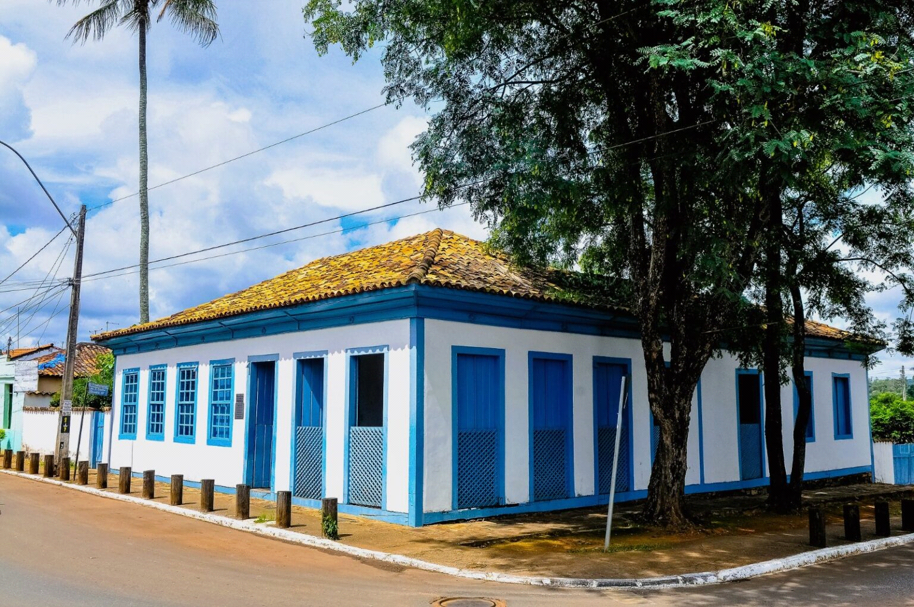

Bem-vindo à De Boa Planaltina
Seu portal completo de informações sobre a cidade mais antiga do Distrito Federal. Encontre notícias, os melhores pontos turísticos e as oportunidades de negócio que impulsionam o desenvolvimento local.
De Boa e Você: Nossa Missão
Deboa Planaltina é uma página cultural e jornalística que há 3 anos valoriza as histórias, talentos e o comércio local. Nosso propósito é fortalecer a identidade cultural de Planaltina e região, dando voz a quem faz a diferença e impulsionando o desenvolvimento local.
Seja um Parceiro De Boa Planaltina
Dê visibilidade máxima ao seu negócio. Atinja milhares de clientes potenciais na região e fortaleça a sua marca.
Plano Destaque
Plano Patrocinador
Plano Eventos
Fale Conosco e Anuncie (61) 99436-8262
Turismo: Os Tesouros de Planaltina
Explore a rica história, espiritualidade e natureza da cidade. Descubra o que fazer em Planaltina.
Museu Histórico e Artístico de Planaltina

O Museu Histórico e Artístico de Planaltina é um museu brasileiro, construído entre os séculos XIX e XX e inaugurado em 1974. Patrimônio Histórico Nacional desde 1987.
Localização e Horário
Setor Tradicional, quadra 57. Quarta a domingo, 08:00-12:00 e 14:00-18:00.
História
O casarão colonial de Afonso Coelho da Silva Campos simboliza a influência histórica da família Guimarães na região. Passou a ser Museu em 1973, resgatando a identidade cultural de Planaltina.
Acervo e Conservação
O acervo inclui mobiliário antigo, fotografias, o primeiro telefone de Planaltina e o piano alemão de 1925. Passou por reformas e reabriu em 2017, mantendo a conservação do patrimônio.
Pedra Fundamental de Brasília

Obelisco construído em 1922, no Morro do Centenário, marcando a fundação de Brasília, a 10 km de Planaltina.
História e Missão Cruls
Expedições iniciadas após a Constituição de 1891 demarcaram a área. A pedra foi assentada pelo presidente Epitácio Pessoa em 7 de setembro de 1922.
Descrição do Obelisco
Forma piramidal de base quadrada, 3,75 m de altura, orientada pelos pontos cardeais. Placa comemorativa registra o assentamento da Pedra Fundamental.
Via Sacra do Morro da Capelinha
Evento cultural religioso brasileiro, realizado desde 1973, com aproximadamente 1.400 voluntários. Patrimônio Cultural Imaterial desde 2008.
História e Significado
Encena a vida de Jesus Cristo, do julgamento à ressurreição, atraindo público de todo o DF e outras regiões.
Estação Ecológica de Águas Emendadas
Unidade de conservação com 10.547 hectares, próxima a Planaltina, protegendo fauna e flora, reconhecida pela UNESCO.
Fenômeno Hidrográfico
Águas fluem para duas bacias distintas: Rio Tocantins (Norte) e Rio da Prata (Sul).
Flora e Fauna
Vegetação diversa: cerrado, veredas, mata de galeria. Fauna inclui lobo-guará, veado-campeiro, tamanduá-bandeira, tatu-canastra e aves raras.
Vale do Amanhecer

Maior comunidade espírita do DF, fundada por Neiva Chaves Zelaya ("Tia Neiva") em 1969.
A Doutrina
Espiritualista cristã, baseada nos princípios crísticos e na reencarnação. Mais de 600 templos no Brasil e exterior.
História e Fundação
Neiva iniciou sua peregrinação aos 33 anos e fundou o Vale do Amanhecer em 1969. Governado por um conselho de mestres chamados "Trinos Presidente Triada".